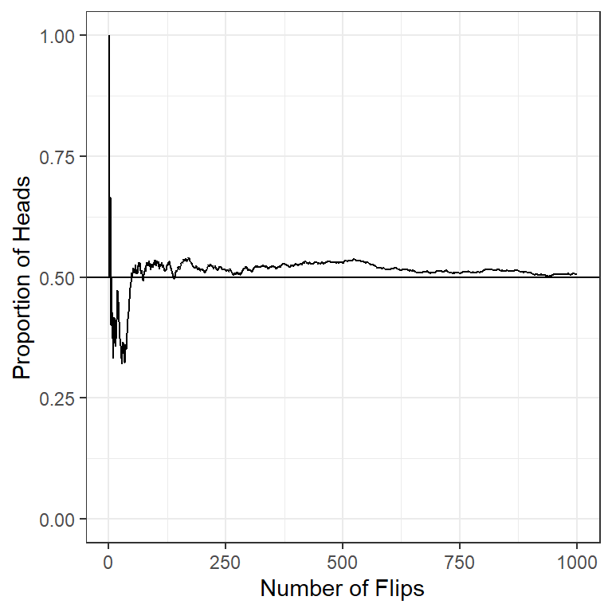
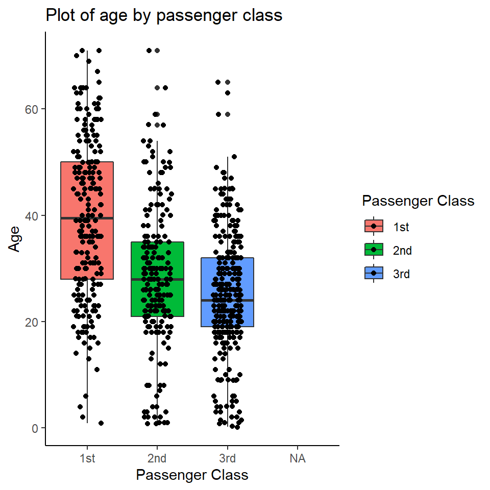
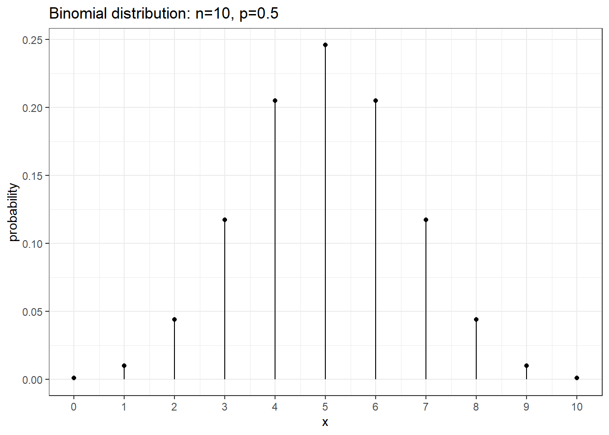

Session 6 Bayesian Regression I
- Learn how to fit linear regression model with brms
- Understand how to interpret and report regression posterior results
- Learn how to fit clustered data with brms
- Learn how to conduct model diagnostics, model comparison, and variable selection
What is regression? (McElreath 2018)
using one or more predictor variables to model the distribution of one or more outcome variables
For a continuous outcome, we typically fit a linear regression model.
- Of course the relationship between outcome and predictors can be non-linear, in this case, we would consider fitting polynomial regression models or splines.
For a categorical outcome, we will fit a generalized linear regression. We will cover this topic in future sessions.
For a repeatedly measured outcome, we can fit a linear mixed-effect model (continuous outcome) or a generalized linear mixed-effect model (categorical outcome).
6.1 Normal Models and Linear Regression
Conditional normal model
- Given its mean and variance, an observation has a normal distribution
\[ Y_i \mid \mu_i, \sigma^2_i \sim N( \mu_i, \sigma^2_i) \]
- This is equivalent to the following statements
\[ Y_i = \mu_i + e_i , \ e_i \sim N(0, \sigma^2)\]
We do not assume the collection of \(Y_i, i=1, \ldots, n\) have a normal distribution
Instead we assume the error term is normally distributed - a lesser assumption!
In case of multiple predictors, \(\mu_i\) becomes a weighted average of the \(\beta_j\) values, the regression coefficient with \(x_{ij}\) denoting the predictors. For example, for two covariates we have
\[ E(y_i) = \mu_i = \beta_0 + \beta_1 x_{i1} + \beta_2 x_{i2} \]
- A polynomial regression model of 2 degrees on \(x_{i1}\)
\[ \mu_i = \beta_0 + \beta_1 x_{i1} + \beta_2 x_{i2} + \beta_3 x_{i1}^2 \]
- Assumptions of linear regression models
- Independent observations
- Linear relationship We can check this assumption by examining marginal plots comparing the model predicted relationship between outcome and each continuous predictor and by examining the residual plot.
- Normality of the residuals
- Homoscedasticity Homoscedasticity in a model means that the residual is constant along the values of the dependent variable.
- Multidisciplinary Multicollinearity is the phenomenon when a number of the explanatory variables are strongly correlated.
- Correctly specified regression model This means that all relevant predictors for the response variable have been included in the model. This is often difficult to verify, but we can use posterior predictive distribution to check for regression fit.
6.1.1 One-sample and two-sample normal regression
1. One-sample
- If all observations have the same mean and variance, the likelihood is
\[ Y_i \mid \mu, \sigma^2 \sim N(\mu, \sigma^2)\]
- Good candidate priors for \(mu\) and \(\sigma\) are
- \(\mu \sim N(\text{sample mean}, \text{sample sd})\) or Student-T distributions (to handle heavy tails)
- \(\sigma \sim \text{half-t}(mean = 0, sd = \text{sample sd}, df = 3)\)
Modelling height - Textbook example on the Howell data
Suppose we want to fit a one-sample model on height using a dataset of anthropological measurements on a foraging people taken in the 1960s.
- First let’s examine the summary statistics of variable height
dat <- read.table("data/Howell.txt",header=T, sep=";")
dat %>% tbl_summary(
statistic = list(all_continuous() ~ "{mean} ({sd})",
all_categorical() ~ "{n} / {N} ({p}%)"),
digits = all_continuous() ~ 2)| Characteristic | N = 5441 |
|---|---|
| height | 138.26 (27.60) |
| weight | 35.61 (14.72) |
| age | 29.34 (20.75) |
| male | 257 / 544 (47%) |
|
1
Mean (SD); n / N (%)
|
|
dat %>% pivot_longer(everything()) %>%
mutate(name = factor(name, levels = c("height", "weight", "age", "male"))) %>% ggplot(aes(x = value)) +
geom_histogram(bins = 10,fill="#008BB0",colour="#002A5C") +
facet_wrap(~name, scales = "free", ncol = 1) +
theme_bw()
- We specify our model with the following priors \[ heights_i \sim N (\mu, \sigma)\] \[\mu \sim N(138, 28)\] \[\sigma \sim \text{half-t}(0, 28, df = 3)\]

Figure 6.1: Prior distributions
- we now fit this model in brms
fit0 <- brm(data = dat,
family = gaussian,
height ~ 1,
prior = c(prior(normal(138, 28), class = Intercept),
prior(student_t(3, 0, 28), class = sigma)),
iter = 10000,
warmup = 5000,
chains = 4,
cores = 4, #instructions on MCMC
seed = 123, # random number seed to make results reproducible
silent = 2,
refresh = 0)
# saveRDS(fit0, "data/chap7_onesample_example")- Summarizing posterior results

## Family: gaussian
## Links: mu = identity; sigma = identity
## Formula: height ~ 1
## Data: dat (Number of observations: 544)
## Draws: 4 chains, each with iter = 10000; warmup = 5000; thin = 1;
## total post-warmup draws = 20000
##
## Population-Level Effects:
## Estimate Est.Error l-95% CI u-95% CI Rhat Bulk_ESS Tail_ESS
## Intercept 138.25 1.18 135.94 140.58 1.00 18944 14350
##
## Family Specific Parameters:
## Estimate Est.Error l-95% CI u-95% CI Rhat Bulk_ESS Tail_ESS
## sigma 27.64 0.84 26.06 29.35 1.00 18557 13633
##
## Draws were sampled using sampling(NUTS). For each parameter, Bulk_ESS
## and Tail_ESS are effective sample size measures, and Rhat is the potential
## scale reduction factor on split chains (at convergence, Rhat = 1).- Geweke index and R-hat (Geweke et al. 1991) to check for MCMC convergence
# modelposterior <- as.mcmc(fit0)
# geweke.plot(modelposterior)
modelposterior <- posterior_samples(fit0)
geweke.diag(modelposterior)##
## Fraction in 1st window = 0.1
## Fraction in 2nd window = 0.5
##
## b_Intercept sigma lp__
## 0.4570 0.2874 0.9759- Posterior predictive graphic check for model fit
- we can see here there is some skewness not captured in the model, this model is not a good fit to the data.
- we will revisit the height model in the linear regression section where we add covariates to the model to improve the fit.

What is the posterior evidence that mean height is greater than 140cm?
hypothesis(fit0, 'Intercept > 140' , alpha = 0.025)
# proportion of posterior samples on the mean (intercept)
# with value > 140, combining 4 chains;
modelposterior2<- posterior_samples(fit0)
sum(modelposterior2[,1]>140)/length(modelposterior2[,1])2. Two-sample
- Simple extension of the one-sample problem
- Observations within the each group have the same mean and variance, yielding the following likelihood \[ Y_{ji} \mid \mu_j, \sigma^2_j \sim N(\mu_j, \sigma^2_j)\]
- Similar candidate prior as in one-sample model
- using normal or student-t dist and observed summary statistics
- within-group variance should be smaller than the variance when we ignore groups
- We can assume equal variance \(\sigma_1^2 = \sigma_2^2\) or allow them to be estimated seperately
- These two approaches are analogous to the equal-variance and unequal-variance t-tests
- In brms, this is easy to specify
Modelling hours of sleep comparing between two drugs
Data which show the effect of two medication (within-patient increase in hours of sleep) on groups consisting of 10 patients each.
Source: Student (1908) The probable error of a mean. (Student 1908)
First examine the summary statistics by group
sleep <- data.frame(extra = c(0.7, -1.6, -0.2, -1.2, -0.1, 3.4, 3.7, 0.8, 0, 2, 1.9, 0.8, 1.1, 0.1, -0.1, 4.4, 5.5, 1.6, 4.6, 3.4),
group = c(1, 1, 1, 1, 1, 1, 1, 1, 1, 1, 2, 2, 2, 2, 2, 2, 2, 2, 2, 2))
sleep %>%
mutate(group = recode_factor(group, '1'="Drug A", '2'="Drug B")) %>%
tbl_summary(
by = group,
statistic = all_continuous() ~ "{mean} ({sd})",
digits = all_continuous() ~ 2) %>%
add_overall()| Characteristic | Overall, N = 201 | Drug A, N = 101 | Drug B, N = 101 |
|---|---|---|---|
| extra | 1.54 (2.02) | 0.75 (1.79) | 2.33 (2.00) |
|
1
Mean (SD)
|
|||
- Fitting two-sample model in brms using default brms prior
- student_t(3, 1, 2.5) for mean (same for each group)
- student_t(3, 0, 2.5) for sigma (same for each group for unequal variance model)
fit_eq <- brm(data = sleep,
family = gaussian,
extra ~ group, #mean depends on group and one sigma
prior = c(prior(normal(0, 10), class = Intercept),
prior(normal(0,10), class = b),
prior(student_t(3, 0, 2), class = sigma)),
iter = 10000,
warmup = 5000,
chains = 4,
cores = 4, #instructions on MCMC
seed = 123, # random number seed to make results reproducible
silent = 2,
refresh = 0)
prior_summary(fit_eq)
fit_uneq <- brm(data = sleep,
family = gaussian,
bf(extra ~ group, #mean depends on group
sigma ~ group), #sigma differ by group
prior = c(prior(normal(0, 10), class = Intercept), #prior for intercept of the extra ~ group model;
prior(normal(0, 10), class = b), #prior for coefficients of the extra ~ group model;
prior(student_t(3, 0, 2), class = Intercept, dpar = "sigma"), #prior for intercept of the sigma ~ group model;
prior(student_t(3, 0, 2), class = b, dpar = "sigma")), #prior for coefficients of the sigma ~ group model;
iter = 10000,
warmup = 5000,
chains = 4,
cores = 4, #instructions on MCMC
seed = 123, # random number seed to make results reproducible
silent = 2,
refresh = 0)
prior_summary(fit_uneq)
# saveRDS(fit_eq, "data/chap7_twosample_eq")
# saveRDS(fit_uneq, "data/chap7_twosample_uneq")- Summarizing posterior results from equal variance model
## Family: gaussian
## Links: mu = identity; sigma = identity
## Formula: extra ~ group
## Data: sleep (Number of observations: 20)
## Draws: 4 chains, each with iter = 10000; warmup = 5000; thin = 1;
## total post-warmup draws = 20000
##
## Population-Level Effects:
## Estimate Est.Error l-95% CI u-95% CI Rhat Bulk_ESS Tail_ESS
## Intercept 0.73 0.63 -0.55 1.98 1.00 16492 13222
## group2 1.57 0.91 -0.22 3.38 1.00 16232 12475
##
## Family Specific Parameters:
## Estimate Est.Error l-95% CI u-95% CI Rhat Bulk_ESS Tail_ESS
## sigma 2.00 0.35 1.44 2.79 1.00 13907 12976
##
## Draws were sampled using sampling(NUTS). For each parameter, Bulk_ESS
## and Tail_ESS are effective sample size measures, and Rhat is the potential
## scale reduction factor on split chains (at convergence, Rhat = 1).- Question: What is the probability that there is more increase in sleep with drug A? (under equal-variance model)
samples <- posterior_samples(fit_eq)
difference <- samples[,"b_group2"]
#summarize the difference
c(Prob = mean(difference > 0), Mean = mean(difference), lowCrI = quantile(difference, 0.025), highCrI = quantile(difference, 1-0.025))## Prob Mean lowCrI.2.5% highCrI.97.5%
## 0.9591500 1.5713935 -0.2217899 3.3785453#we can also use hypothesis function to evaluate this
hypothesis(fit_eq, "group2 > 0", alpha = 0.025)## Hypothesis Tests for class b:
## Hypothesis Estimate Est.Error CI.Lower CI.Upper Evid.Ratio Post.Prob Star
## 1 (group2) > 0 1.57 0.91 -0.22 3.38 23.48 0.96
## ---
## 'CI': 95%-CI for one-sided and 97.5%-CI for two-sided hypotheses.
## '*': For one-sided hypotheses, the posterior probability exceeds 97.5%;
## for two-sided hypotheses, the value tested against lies outside the 97.5%-CI.
## Posterior probabilities of point hypotheses assume equal prior probabilities.- Summarizing posterior results from unequal variance model and evaluate the same hypothesis
fit_uneq <- readRDS("data/chap7_twosample_uneq")
summary(fit_uneq)## Family: gaussian
## Links: mu = identity; sigma = log
## Formula: extra ~ group
## sigma ~ group
## Data: sleep (Number of observations: 20)
## Draws: 4 chains, each with iter = 10000; warmup = 5000; thin = 1;
## total post-warmup draws = 20000
##
## Population-Level Effects:
## Estimate Est.Error l-95% CI u-95% CI Rhat Bulk_ESS Tail_ESS
## Intercept 0.73 0.63 -0.54 1.97 1.00 15554 10549
## sigma_Intercept 0.63 0.25 0.20 1.17 1.00 15707 11003
## group2 1.57 0.94 -0.27 3.47 1.00 15377 12395
## sigma_group2 0.11 0.35 -0.57 0.80 1.00 14749 11864
##
## Draws were sampled using sampling(NUTS). For each parameter, Bulk_ESS
## and Tail_ESS are effective sample size measures, and Rhat is the potential
## scale reduction factor on split chains (at convergence, Rhat = 1).hypothesis(fit_uneq, "group2 > 0", alpha = 0.025)## Hypothesis Tests for class b:
## Hypothesis Estimate Est.Error CI.Lower CI.Upper Evid.Ratio Post.Prob Star
## 1 (group2) > 0 1.57 0.94 -0.27 3.47 21 0.95
## ---
## 'CI': 95%-CI for one-sided and 97.5%-CI for two-sided hypotheses.
## '*': For one-sided hypotheses, the posterior probability exceeds 97.5%;
## for two-sided hypotheses, the value tested against lies outside the 97.5%-CI.
## Posterior probabilities of point hypotheses assume equal prior probabilities.How to determine equal variance or not?
- Approach 1, visually examine the conditional mean by group.
- Approach 2, comparing models using information criteria (WAIC) or leave-one-out cross validation (LOO) (Vehtari, Gelman, and Gabry 2017)
- Both approaches confirm the equal variance model is the best model!
plot(conditional_effects(fit_uneq), points = TRUE)
waic1 <- waic(fit_eq)
waic2 <- waic(fit_uneq)
compare_ic(waic1, waic2) #equal var best model;## WAIC SE
## fit_eq 85.98 4.25
## fit_uneq 87.57 4.54
## fit_eq - fit_uneq -1.59 0.60loo1 <- loo(fit_eq)
loo2 <- loo(fit_uneq)
loo_compare(loo1, loo2) #equal var best model;## elpd_diff se_diff
## fit_eq 0.0 0.0
## fit_uneq -0.9 0.36.1.2 Linear regression
- The two-sample model is a special case of regression
\[\mu_i = \beta_0 + \beta_1 x_i\]
- Where \(x_i = 0\) for group 1 and \(x_i = 1\) for group 2
- For group 1, \(\mu_i = \beta_0\), the intercept
- For group 2, \(\mu_i = \beta_0 + \beta_1\)
- brms takes care of creating dummy variables!
- but be aware of what the reference group is and what the coefficients mean
- levels will be by default in alphabetical order - use the factor() statement to make a variable with the desired order
Try fitting the two-sample sleep data without the intercept
fit_eq2 <- brm(data = sleep,
family = gaussian,
extra ~ -1 + group, #mean depends on group and one sigma
iter = 10000,
warmup = 5000,
chains = 4,
cores = 4, #instructions on MCMC
seed = 123, # random number seed to make results reproducible
silent = 2,
refresh = 0)
summary(fit_eq2)- In general, for a regression model
\[ y_i \mid \mu_i, \sigma^2_i \sim N(\mu_i, \sigma^2_i)\] \[ \mu_i = \beta_0 + \beta_1 x_{i1} + \ldots + \beta_p x_{ip}\] - where the \(x_{ij}\) can be continuous variables or “dummy” variables - the usual assumption on the variance is \(\sigma_i^2 = \sigma^2\) for all subjects (Homoscedasticity - equal variance assumption) - We can seen that is technically easier to relax this assumption in a Bayesian model! (two-sample unequal variance example)
- Predictions
- We can get the predictions fro the mean value at a given value of the predictors. For example, in simple linear regression model we have
- but recall that both \(\beta_0\) and \(\beta_1\) have posterior distributions
- For each posterior draws of \((\beta_0, \beta_1)^s, s= 1, \ldots, S\), we have a different predicted mean
- The set of values of these predictions across all sampled values give the posterior for the predicted mean
Modelling height - Howell data revisit
- Let’s descriptively examine the height distribution by weight, age, and sex
- We can see that the relationship between age and height is not linear
- we consider the following model

- we consider the following prior distributions (diffuse normal on regression parameter and exponential distribution for \(\sigma\)) \[\beta_0 \sim N(0, 100) \] \[\beta_1 \sim N(0, 10) \] \[\beta_2 \sim N(0, 10) \] \[\beta_3 \sim N(0, 10) \] \[\beta_4 \sim N(0, 10) \] \[ \sigma \sim Gamma(1, 0.01) \]

Figure 6.2: Prior distributions
- we now fit this model in brms
dat <- dat %>%
mutate(male = factor(male, labels = c("female", "male")))
fit1 <- brm(data = dat,
family = gaussian,
height ~ weight + age + I(age^2) + male,
prior = c(prior(normal(0, 100), class = Intercept),
# set for all "b" coefficients
prior(normal(0, 10), class = b),
prior(gamma(1, 0.01), class = sigma)),
iter = 20000,
warmup = 18000,
chains = 4,
cores = 4, #instructions on MCMC
seed = 123, # random number seed to make results reproducible
silent = 2,
refresh = 0)
# saveRDS(fit1, "data/chap7_reg_example")- Summarizing posterior results
## Family: gaussian
## Links: mu = identity; sigma = identity
## Formula: height ~ weight + age + I(age^2) + male
## Data: dat (Number of observations: 544)
## Draws: 4 chains, each with iter = 20000; warmup = 18000; thin = 1;
## total post-warmup draws = 8000
##
## Population-Level Effects:
## Estimate Est.Error l-95% CI u-95% CI Rhat Bulk_ESS Tail_ESS
## Intercept 75.53 1.01 73.52 77.50 1.00 8716 6882
## weight 1.26 0.06 1.15 1.37 1.00 3406 4486
## age 1.06 0.11 0.84 1.29 1.00 3169 4137
## IageE2 -0.01 0.00 -0.01 -0.01 1.00 3297 4224
## malemale 1.86 0.80 0.33 3.41 1.00 5375 4740
##
## Family Specific Parameters:
## Estimate Est.Error l-95% CI u-95% CI Rhat Bulk_ESS Tail_ESS
## sigma 8.70 0.27 8.20 9.23 1.00 6501 5373
##
## Draws were sampled using sampling(NUTS). For each parameter, Bulk_ESS
## and Tail_ESS are effective sample size measures, and Rhat is the potential
## scale reduction factor on split chains (at convergence, Rhat = 1).- Using the posterior mean, we have the following regression line
\[\hat{height}_i = 75.53 + 1.26 \ weight_i + 1.06 \ age_i -0.01 \ age_i^2 + 1.86 \ \text{I(sex=male)}\]
Comparing between male and female of the same weight and age, the expected difference on height is estimated at 1.86cm with 95% CI[0.33, 3.41].
What is the posterior evidence that there’s a positive association between height and sex?
hypothesis(fit1, 'malemale > 0' , alpha = 0.025)## Hypothesis Tests for class b:
## Hypothesis Estimate Est.Error CI.Lower CI.Upper Evid.Ratio Post.Prob Star
## 1 (malemale) > 0 1.86 0.8 0.33 3.41 99 0.99 *
## ---
## 'CI': 95%-CI for one-sided and 97.5%-CI for two-sided hypotheses.
## '*': For one-sided hypotheses, the posterior probability exceeds 97.5%;
## for two-sided hypotheses, the value tested against lies outside the 97.5%-CI.
## Posterior probabilities of point hypotheses assume equal prior probabilities.- we can visualize conditional effect of each continuous covariates on the response variable
- one might consider fitting \(weight^2\)!
plot(conditional_effects(fit1, "weight"),points = TRUE, point_args = list(size = 0.5))
plot(conditional_effects(fit1, "age"),points = TRUE, point_args = list(size = 0.5))plot(conditional_effects(fit1, "male"))- Coefficient of determination \(R^2\) is the proportion of the variation in the dependent variable that is predictable from the independent variable(s).
- The estimated \(R^2\) is about 0.9. Really good! About 90% of the variance on height is explained by our model.
bayes_R2(fit1)## Estimate Est.Error Q2.5 Q97.5
## R2 0.9010756 0.002608764 0.8953755 0.9055377- predictive intervals
- predicting height for a female, 33 years of age and weighting 60kg
ind_predic <- posterior_predict(fit1, newdata = data.frame(weight = 60, age = 33, male = "female"))
# mean of the predicted heights
mean(ind_predic)## [1] 174.1885# Construct a 95% posterior credible interval
posterior_interval(ind_predic, prob = 0.95)## 2.5% 97.5%
## [1,] 157.0797 191.1125# Posterior predictive probability of height > 164
sum(ind_predic>164)/length(ind_predic)## [1] 0.8778756.1.3 Model diagnostics
- Geweke index and R-hat (Geweke et al. 1991) to check for MCMC convergence
modelposterior<- as_draws_matrix(fit1)
geweke.diag(modelposterior)##
## Fraction in 1st window = 0.1
## Fraction in 2nd window = 0.5
##
## b_Intercept b_weight b_age b_IageE2 b_malemale sigma
## 1.10099 -0.36665 0.04242 -0.04991 -0.05772 -0.37171
## lp__
## 1.16552- Posterior predictive graphic check for model fit
- A “good” Bayesian model produces posterior predicted sets of response values with features similar to the original data.
- It appears our model can be improved! One suggestion is to fit a non-linear term for weight variable.
- sometime, people also consider data transformation, e.g., log(height)
- we can also try using student-t distribution not normal distribution to fit the mean!
- the observed min and max height is not covered in our posterior predictive samples…
pp_check(fit1, ndraws = 50)
pp_check(fit1, type = "stat_2d", stat = c("max", "min"))
- Residual plot by continuous variables - checking for linearity assumption
res_df <- fit1$data %>%
mutate(predict_y = predict(fit1)[ , "Estimate"],
std_resid = residuals(fit1, type = "pearson")[ , "Estimate"])
ggplot(res_df,
aes(predict_y, std_resid)) +
labs(y="Standardized residuals") +
geom_point(size = 0.8) + stat_smooth(se = FALSE) + theme_bw()
- multicollinearity
- If some coefficients are particularly strongly correlated, you may need to think about using a stronger prior or combining some predictors.
pairs(fit1, pars = "b",
off_diag_args = # arguments of the scatterplots
list(size = 0.5, # point size
alpha = 0.25)) # transparency
6.1.4 Model comparision
Watanabe-Akaike Information Criteria (WAIC)
- WAIC (Watanabe and Opper 2010) is an alternative approach to DIC in estimating the expected log point-wise predictive density
- The smaller the better!
- WAIC incorporates prior information, and the use of point-wise likelihood makes it more robust when the posterior distributions deviate from normality.
- In general, WAIC is a better estimate of the out-of-sample deviance than AIC and DIC.
- In R under brms package we can use
waic()function to obtain WAIC.
Bayesian Leave-one-out cross-validation
The idea of cross-validation is to split the sample so that it imitates the scenario of estimating the parameters in part of the data and predicting the remaining part.
- data that are used for estimation is called the training set, and data that are used for prediction is called the validation set.
Leave-one-out information criteria (LOO-IC) based on posterior predictive distribution
- means that one uses \(n-1\) observations as the training set and 1 observation as the validation sample, repeat the process \(n\) times so that each time a different observation is being predicted
LOO-IC requires fitting the model \(n\) times, it is generally very computational intensive
WAIC can be treated as a fast approximation of LOO-IC, although LOO-IC is more robust and will be a better estimate of out-of-sample deviance
In R under brms package we can use
loo()function to obtain LOO-IC.
Comparing model with \(weight^2\)
- fitting the new model on height, adjusting for age, sex, weight, \(age^2\) and \(weight^2\)
- comparing this model to the regression model adjusted for age, \(age^2\), sex, and weight using WAIC and LOO.
fit2 <- brm(data = dat,
family = gaussian,
height ~ weight + I(weight^2) + age + I(age^2) + male,
prior = c(prior(normal(0, 100), class = Intercept),
prior(normal(0, 10), class = b),
prior(gamma(1, 0.01), class = sigma)),
iter = 20000,
warmup = 18000,
chains = 4,
cores = 4, #instructions on MCMC
seed = 123, # random number seed to make results reproducible
silent = 2,
refresh = 0)
saveRDS(fit2, "data/chp7_height2")
waic1 <- waic(fit1)
waic2 <- waic(fit2)
compare_ic(waic1, waic2)
loo1 <- loo(fit1)
loo2 <- loo(fit2)
loo_compare(loo1, loo2)fit2<-readRDS("data/chp7_height2")
pp_check(fit2, ndraws = 50)